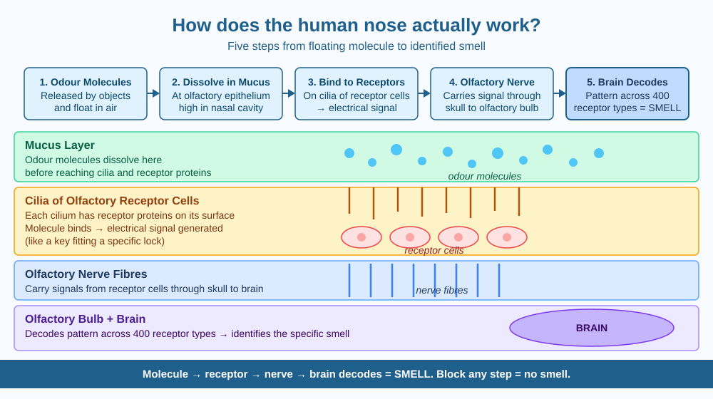

By the end of this lesson, you should be able to explain the step-by-step mechanism of smell, name the key structures involved, and predict what happens when the olfactory nerve is blocked.
Close your eyes and someone holds biryani under your nose. Before you even open your eyes, you recognise it instantly. Air is invisible. Smell is invisible. Yet your brain knows exactly what is there within a fraction of a second. How does your nose turn floating, invisible molecules into a specific name — "biryani"?
Smells come from tiny chemical molecules released by objects. A flower, a lemon, smoke, and petrol each release different chemicals into the air. When you breathe in, air — carrying these molecules — rushes into your nasal cavity.
Most of the nasal cavity is just a passage for air. But high up, near the roof of the nasal cavity, is a small patch of tissue roughly the size of a postage stamp. This is called the olfactory epithelium. Packed inside it are about 5 to 10 million olfactory receptor cells — specialised nerve cells whose only job is to detect chemical molecules.
Here is the mechanism, step by step:
Step 1 — Molecules dissolve in mucus. The olfactory epithelium is coated in a thin layer of mucus. As air flows past, odour molecules dissolve into this mucus. (This is why dry air reduces your sense of smell — if the mucus dries out, molecules cannot dissolve properly and never reach the receptors.)
Step 2 — Molecules bind to receptor proteins. Each olfactory receptor cell has tiny hair-like projections called cilia that extend into the mucus layer. The surface of each cilium is studded with special protein molecules called receptors. Each odour molecule has a shape that fits only certain receptor proteins — like a key fitting a specific lock.
Step 3 — An electrical signal is generated. When an odour molecule binds to a matching receptor protein, it triggers an electrical signal inside that receptor cell.
Step 4 — The signal travels to the brain. The electrical signal travels along the olfactory nerve — a bundle of nerve fibres that passes directly through tiny holes in the skull bones — to the olfactory bulb, a structure at the front of the brain just above the nasal cavity.
Step 5 — The brain decodes the pattern. Different smells activate different combinations of receptor types. The olfactory bulb and surrounding brain areas analyse the pattern of which receptors were activated and decode it as a specific smell. This is why we can distinguish between thousands of different odours — the brain reads a unique pattern, not a single signal.
The nose is a chemical detection system:
Odour molecules → Dissolve in mucus → Bind to receptor proteins on cilia → Electrical signal → Olfactory nerve → Olfactory bulb → Brain decodes pattern → "That's biryani."
The key insight is that your nose doesn't detect smells directly. It detects chemical shapes — and your brain converts those shapes into the experience of a smell. Block any step in the chain and the smell disappears.
The included SVG shows the olfactory pathway in two panels:

The human nose has about 400 different types of olfactory receptor proteins. Each type responds to a slightly different range of chemical shapes. A single complex odour (like coffee or fresh rain) activates dozens of receptor types simultaneously, producing a unique combination.
Scientists have estimated that humans can theoretically distinguish around 1 trillion different smells — far more than the number of colours we can see or tones we can hear.
Predict: If a medicine blocked all olfactory receptor proteins from binding to odour molecules — without touching the olfactory nerve or olfactory bulb — what would happen to a person's sense of smell? Would it return when the medicine wore off? Why?
What is the primary role of the olfactory receptors in the nose?
Why is identifying the mechanism of smell more useful than just knowing that the nose detects odours?
If the olfactory nerve were blocked, what would you predict would happen to a person's sense of smell?
The next time you eat something strongly flavoured — mango pickle, chai, or biryani — taste it normally first. Then pinch your nose firmly and taste again. Write three sentences comparing the two experiences and explaining the difference using today's mechanism. Identify exactly which step in the pathway was affected.
Olfactory receptor cells are among the very few neurons in your body that are regularly replaced throughout your life. Most neurons — including brain cells — cannot regenerate once damaged. But olfactory receptor cells renew approximately every 30 to 60 days. This is why, even after a severe cold or COVID-19 damages many receptor cells, the sense of smell usually returns fully within weeks to months as new cells grow in.
Smell is chemistry: odour molecules dissolve in nasal mucus, lock onto receptor proteins on cilia, trigger nerve signals, and the brain decodes the pattern as a specific smell. Block any step — mucus, receptor binding, nerve, or brain connection — and the chain breaks completely.